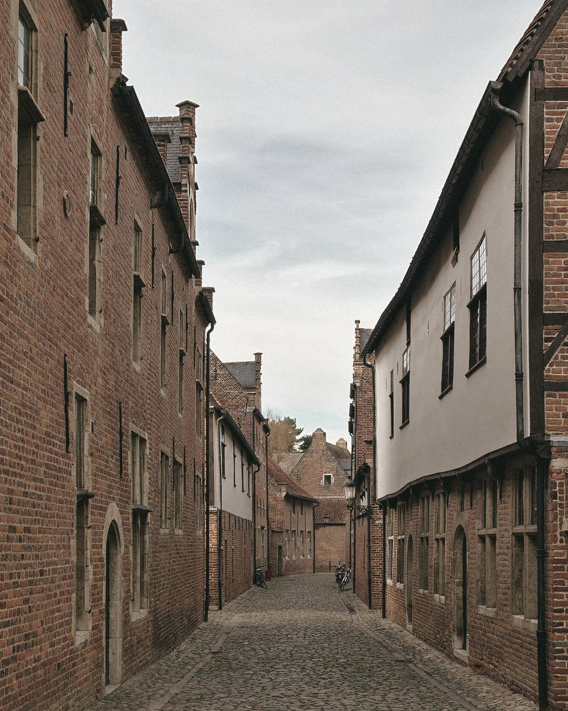
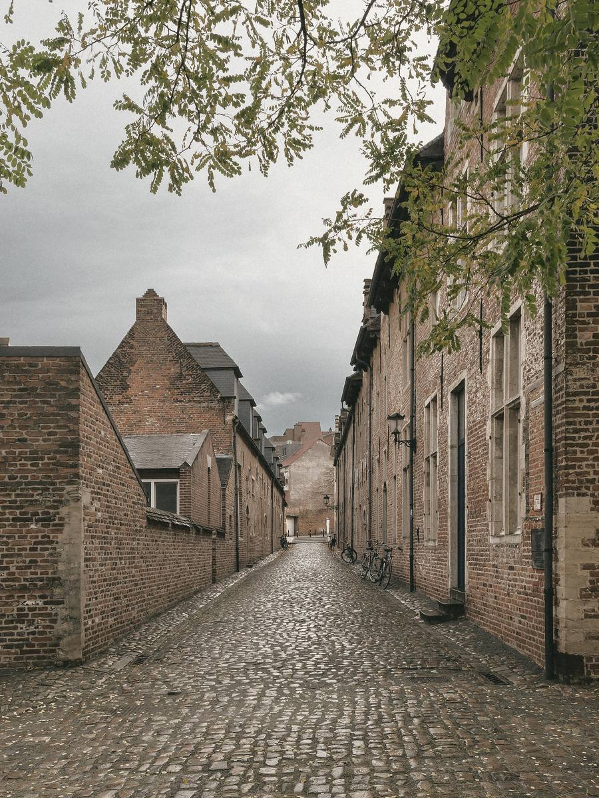
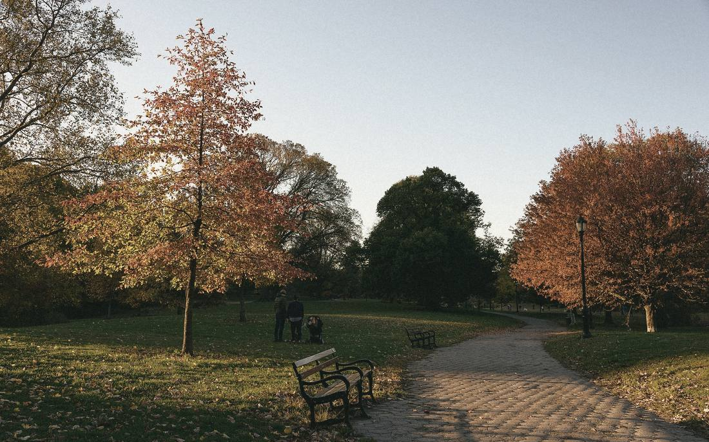
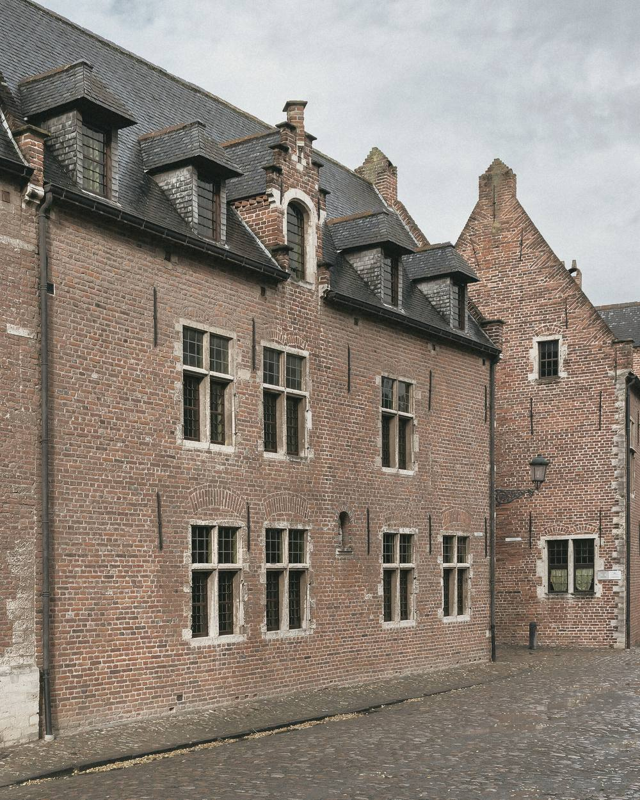

Advocatenkantoor te Leuven
Recht raakt zelden alleen papier.
Het raakt mensen.
Een scheiding. Een kind dat vastloopt. Een ouder die niet meer zelf kan beslissen. Achter elk dossier zit een gezin en een verhaal. Ik help u daar doorheen, in gewone taal, en ik zeg u eerlijk wat wel en niet kan.
Het kantoor
Eén advocaat, die uw dossier zelf kent
U wordt niet doorgegeven van de ene medewerker naar de andere. Wie u aan de telefoon krijgt, is wie uw stukken heeft gelezen en wie mee naar de rechtbank gaat.
Dat is een bewuste keuze. In familie- en jeugdzaken gaat het over vertrouwelijke, vaak pijnlijke dingen. Die vertelt u niet graag twee keer.
-
Persoonlijk
Uw dossier wordt door mij behandeld, van het eerste gesprek tot de laatste zitting. Geen wisselende gezichten, en geen verhaal dat u telkens opnieuw moet doen.
-
Verstaanbaar
Uitleg in gewone taal, met de juridische termen erbij zodat u ze herkent in de stukken. U weet wat er in uw dossier gebeurt en waarom.
-
Vertrouwelijk
Het beroepsgeheim van de advocaat is absoluut. Wat u mij vertelt, blijft bij mij, ook wanneer de zaak voorbij is.

Tijdelijk beeld, te vervangen door een foto van het kantoor
Rechtsdomeinen
Waarin ik u bijsta
Vier domeinen, en ze raken elkaar voortdurend. Een echtscheiding loopt over in een verblijfsregeling. Een jeugdzaak begint soms bij een strafdossier. Omdat ik ze alle vier voer, ziet u niet vier losse procedures maar één samenhangend plan.
Echtscheiding, verblijfsregeling en onderhoudsbijdragen, afstamming, erfenissen binnen het gezin. De afspraken die uw dagelijks leven bepalen.
Lezen 02 JeugdrechtBijstand aan minderjarigen en aan ouders bij de jeugdrechtbank, het Ondersteuningscentrum Jeugdzorg en het sociaal onderzoek. Ook als het kind zelf een eigen advocaat nodig heeft.
Lezen 03 PersonenrechtBewind over goederen en persoon, verlengde minderjarigheid, naams- en staatswijziging, gedwongen opname. Het recht rond wie iemand is en wie voor hem beslist.
Lezen 04 StrafrechtVerdediging vanaf het eerste verhoor tot de zitting, en bijstand als burgerlijke partij wanneer u zelf slachtoffer werd.
LezenIk kan niet beloven dat het makkelijk wordt. Wel dat u het niet alleen hoeft te doen.

Bemiddeling
Niet elk conflict hoort thuis in een rechtszaal
Een vonnis wijst iemand aan die gelijk krijgt. Dat beslecht een geschil, maar het herstelt zelden een verhouding. En als u samen kinderen heeft, blijft die verhouding nog jaren bestaan. Op verjaardagen, op oudercontacten, bij elke beslissing over uw kind.
Als bemiddelaar kies ik geen partij. Ik begeleid u beiden naar afspraken die u zelf maakt en zelf gedragen vindt. Wat u samen vastlegt, kan door de familierechtbank worden bekrachtigd en heeft dan dezelfde kracht als een vonnis.
- Sneller dan een gerechtelijke procedure
- Goedkoper, omdat u de kosten deelt
- Vertrouwelijk: wat op tafel komt, blijft binnen de bemiddeling
- U beslist zelf, in plaats van een rechter
- Zonder akkoord blijft de gewone weg gewoon open
- Afdwingbaar na bekrachtiging door de rechtbank
Werkwijze
Hoe een dossier bij mij verloopt
Geen enkel dossier is hetzelfde, maar de weg erdoorheen wel. Zo weet u van bij het begin wat er komt, wat het kost en wanneer u van mij hoort.

-
Eerste gesprek
U vertelt wat er speelt. Ik stel vragen, lees uw stukken en zeg u eerlijk hoe sterk uw zaak staat, ook wanneer dat niet is wat u had gehoopt. We overlopen welke wegen openstaan: een regeling in der minne, bemiddeling, of toch een procedure. Aan het einde van dat uur weet u wat elk van die wegen kost en hoe lang ze duurt.
-
Opdracht en afspraken
Beslist u om verder te gaan, dan leg ik vast wat we afspreken: wat ik voor u doe, welk tarief geldt, welke kosten u mag verwachten en welke provisie ik vraag. Tegelijk gaan we na of uw rechtsbijstandsverzekering tussenkomt of u recht heeft op juridische tweedelijnsbijstand.
-
Onderhandelen of procederen
Waar een regeling haalbaar is, probeer ik die eerst, in overleg met de tegenpartij of via bemiddeling. Dat spaart tijd, geld en verhoudingen. Lukt het niet, dan voer ik de procedure met dezelfde vastberadenheid: dagvaarding of verzoekschrift, conclusies, stukken en pleidooi.
-
Opvolging tijdens de procedure
U krijgt kopie van alles wat in uw dossier gebeurt, en u hoort het van mij wanneer er iets verandert. Ook als het nieuws is dat er nog niets nieuws is. Voor elke zitting overlopen we samen wat er gaat gebeuren en wat er van u verwacht wordt.
-
Na het vonnis
Een uitspraak is zelden het einde. We bespreken wat het vonnis in de praktijk betekent, of hoger beroep zinvol is, en wat er nog moet gebeuren om het uitgevoerd te krijgen. Loopt de andere partij de afspraken niet na, dan weet u waar u dan staat.
Kosten
Vooraf weten waar u aan toe bent
Onzekerheid over de rekening houdt mensen tegen om hulp te zoeken. Daarom bespreek ik het ereloon in het eerste gesprek, niet in een brief achteraf.
U krijgt een schriftelijke bevestiging van het tarief en een raming van de kosten van uw zaak. Heeft u een rechtsbijstandsverzekering, dan gaan we na of uw polis deze zaak dekt. Ligt uw inkomen onder de wettelijke grens, dan kunt u recht hebben op juridische tweedelijnsbijstand, de kosteloze bijstand die vroeger “pro deo” heette.
Wat u mag verwachten
- Een antwoord binnen twee werkdagen
- Een schriftelijke afspraak over het ereloon
- Kopie van alle stukken in uw dossier
- Uitleg in gewone taal, geen onnodig jargon
- Beroepsgeheim, zonder uitzondering
Kennismaken
Uw situatie rustig bespreken, voor u iets beslist
Een eerste gesprek dient om te luisteren. U vertelt wat er speelt, ik schets welke wegen openstaan en wat elk daarvan realistisch betekent: in tijd, in kosten en voor de mensen om u heen. Pas daarna beslist u of u verdergaat.
